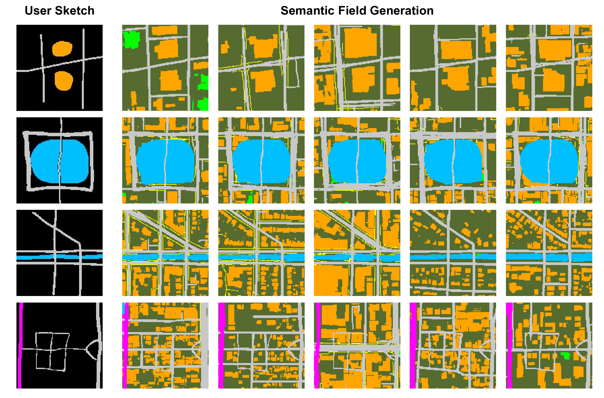
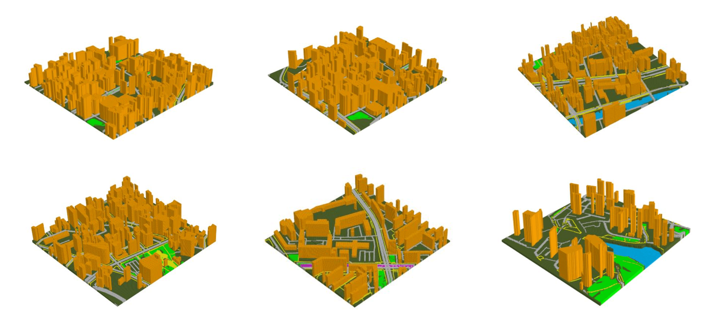

Case Study
User Control
3D Layout
Rendering

City layout generation has recently gained significant attention. The goal of this task is to automatically generate the layout of a city scene, including elements such as roads, buildings, vegetation, as well as other urban infrastructure. Previous methods using VAEs or GANs for 3D city layout generation offer limited diversity and constrained interactivity, only allowing users to selectively regenerate parts of the layout, which greatly limits customization. In this paper, we propose CityGen, a novel end-to-end framework for infinite, diverse and controllable 3D city layout generation. First, we propose an outpainting pipeline to extend the local layout to an infinite city layout. Then, we utilize a multi-scale diffusion model to generate diverse and controllable local semantic layout patches. The extensive experiments show that CityGen achieves state-of-the-art (SOTA) performance under FID, KID, and other human feedback metrics in generating an infinite and controllable 3D city layout. CityGen demonstrates promising applicability in fields like smart cities, urban planning, and digital simulation.
In the initial step, we sample a local block from noise and extend it infinitely through the auto-regressive outpainting process. Subsequently, we iteratively refine the global semantic field to achieve a more nuanced and polished global field. Following the refinement, height values are assigned to each class. After that, we integrate the semantic field with the height field to synthesize the 3D layout. Finally, by employing an image-to-image approach, we can effectively synthesize diverse city scenes.
In the Vision-Environment section, STEVE-13B plays the game according to specified tasks defined by the human player, collecting visual information through prismarine-viewer and capturing environmental information from the screen using Ray Tracing. Note that during the collection phase, the language instruction task is also performed. We simultaneously record and save the chat flow from the reasoning and decomposition stages. In the Question-Answering section, we obtain information from the Minecraft-Wiki and Reddit forums, and use GPT-3.5 to clean the data into Single-round QA pairs. In the Skill-Code section, we use GPT-3.5 combined with the human player's code to synthesize code snippets, and then check and revise them in the game environment.